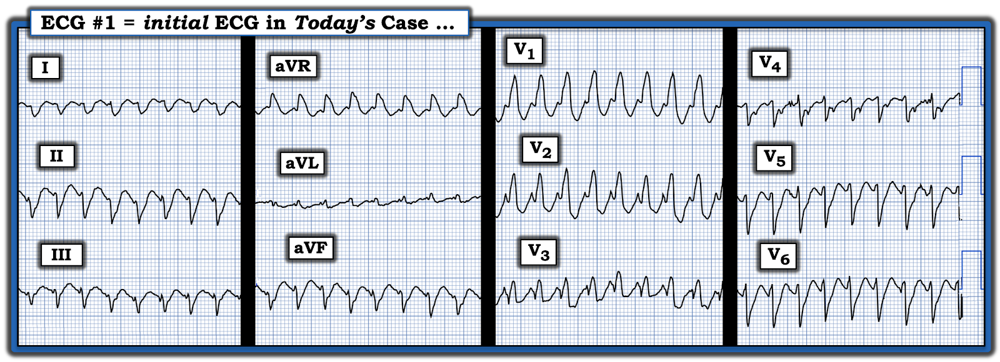
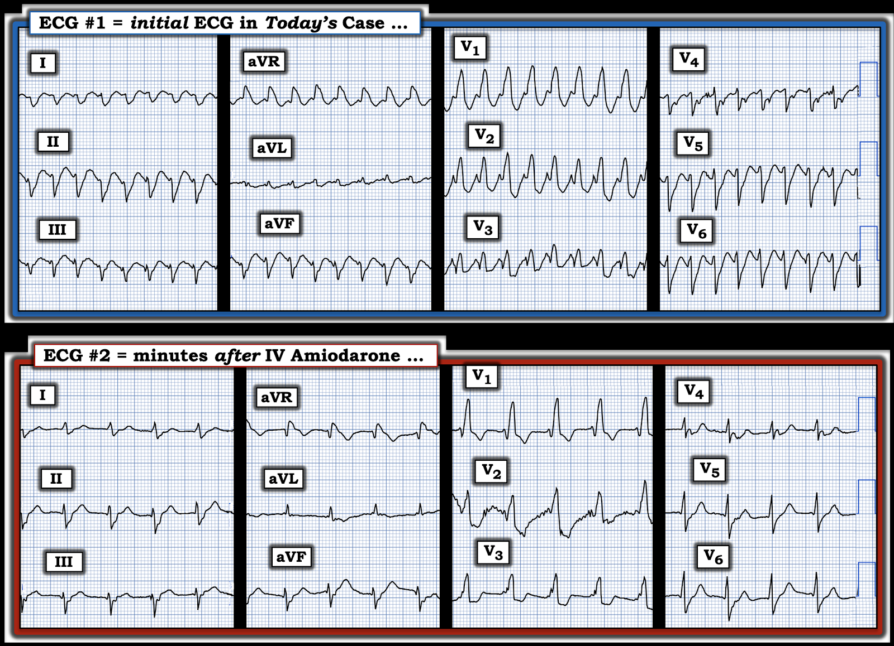
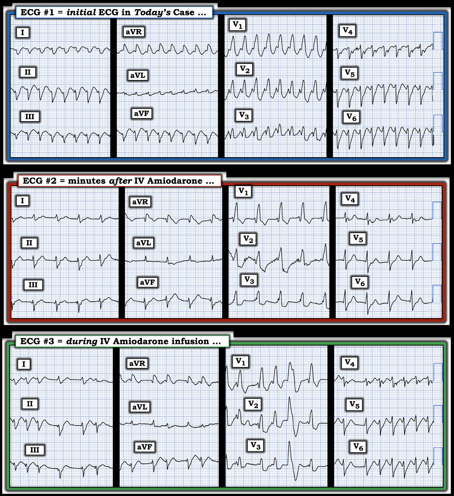

ECG Blog #491 — VT cho đến khi chứng minh được điều ngược lại?
Điện tâm đồ ở Hình-1 được ghi từ một người đàn ông lớn tuổi có tiền sử bệnh mạch vành và AFib (rung nhĩ – Atrial Fibrillation) mạn tính — nhập ICU (đơn vị hồi sức tích cực – Intensive Care Unit) trong tình trạng bệnh cấp tính nặng do nhiễm khuẩn huyết. Ông ổn định huyết động vào thời điểm ghi bản ghi này.
=================================
LƯU Ý: Điện tâm đồ trong ca hôm nay trông giống bản ghi tôi đã trình bày cách đây vài tuần trong ECG Blog #489. Nhưng liệu câu trả lời có giống nhau không?
=================================
CÂU HỎI:
- Bạn diễn giải điện tâm đồ ở Hình-1 như thế nào?
- Bạn chắc chắn đến mức nào về chẩn đoán của mình?
- Việc bệnh nhân này ổn định huyết động vào thời điểm ghi điện tâm đồ có ảnh hưởng đến chẩn đoán của bạn không?
- Bạn sẽ điều trị bệnh nhân này như thế nào?


Suy nghĩ của tôi về CA BỆNH hôm nay:
Áp dụng Ps, Qs và 3Rs (Xem ECG Blog #185) — nhịp ở Hình-1 nhanh (~220/phút) — đều — với QRS rộng — và không có dấu hiệu rõ ràng của hoạt động nhĩ. Điều này xác định nhịp là WCT đều (nhịp nhanh QRS rộng – Wide-Complex Tachycardia). Theo các ĐƯỜNG LINK tới những ca khác ở cuối trang này — chẩn đoán phân biệt chính là giữa:
- VT (nhịp nhanh thất – Ventricular Tachycardia) — hoặc —
- SVT (nhịp nhanh trên thất – SupraVentricular Tachycardia) kèm một trong hai tình trạng sau: i) BBB có từ trước (blốc nhánh – Bundle Branch Block); hoặc ii) Dẫn truyền lệch hướng do tần số nhanh.
Trong những trường hợp hiếm — "một nguyên nhân khác" (tức là tăng kali máu, ngộ độc thuốc chẹn kênh natri — hoặc ngộ độc khác) có thể gây ra nhịp WCT đều. Vì bệnh nhân này đang nằm điều trị tại ICU — có lẽ ông không bị tăng kali máu, do đó vấn đề chính cần cân nhắc là phân biệt giữa VT với SVT kèm BBB có từ trước hoặc dẫn truyền lệch hướng liên quan tần số.
Những điểm CHÍNH cần cân nhắc bao gồm:
- Về mặt thống kê, trong một quần thể người lớn không chọn lọc — ít nhất 80% các nhịp WCT đều không có dấu hiệu hoạt động nhĩ rốt cuộc sẽ là VT. Vì bệnh nhân hôm nay là người lớn tuổi có bệnh mạch vành đã biết — khả năng VT tăng lên ~90% ngay cả trước khi chúng ta xét đến các đặc điểm cụ thể của điện tâm đồ này.
- Hình dạng QRS có thể cho phép dự đoán nguyên nhân WCT chính xác hơn — đặc biệt NẾU có các đặc điểm điện tâm đồ gợi ý VT hoặc SVT. Dù vậy, ngay cả trong những ca mà hình dạng QRS có gợi ý — hiếm khi đạt được sự chắc chắn 100% trước khi chúng ta cần bắt đầu điều trị.
- Sự ổn định huyết động trong nhịp WCT không loại trừ VT. Tuy đúng là bệnh nhân VT bền bỉ dễ mất bù hơn nhiều so với những người duy trì nhịp SVT kéo dài — những nhận định chung này không phải lúc nào cũng đúng. Nếu chức năng thất trái tốt và tần số tim không quá nhanh — thì một số bệnh nhân VT bền bỉ vẫn có thể ổn định huyết động trong vài giờ (hoặc thậm chí lâu hơn).
Còn CA BỆNH hôm nay thì sao?
Khi ca này được gửi đến tôi — tôi thấy ngạc nhiên khi bệnh nhân nhiễm khuẩn huyết đang bệnh nặng cấp tính này lại ổn định huyết động với nhịp WCT này — vì tần số tim quá ư là nhanh (tức là ~220/phút).
- Tôi nghĩ nhịp này là VT phân nhánh (fascicular VT) — vì hình dạng QRS giống dẫn truyền kiểu rbbb ở các chuyển đạo ngực (tức là với phức bộ dương hoàn toàn ở chuyển đạo V1 — dạng RS ở chuyển đạo bên V6 với phần cuối âm phù hợp với dẫn truyền kiểu rbbb — và trục lệch phải rõ rệt trên mặt phẳng trán).
- Với tình trạng bệnh nặng cấp tính của bệnh nhân này và tần số rất nhanh của nhịp WCT — có lẽ tôi đã chuyển sang sốc điện chuyển nhịp đồng bộ. Tuy nhiên, vì bệnh nhân này ổn định huyết động — các nhân viên y tế tại giường đã hợp lý khi chọn thử Amiodarone tĩnh mạch, sẵn sàng sốc điện chuyển nhịp vào bất kỳ lúc nào nếu bệnh nhân trở nên mất ổn định huyết động.
ĐIỂM THEN CHỐT (PEARL) #1:
Dù nhịp ở Hình-1 "trông" giống VT đến đâu — điều quan trọng là nhận thức được giới hạn về độ chính xác chẩn đoán của chúng ta từ một điện tâm đồ duy nhất này. Các đặc điểm điện tâm đồ gây nhiễu trên bản ghi này bao gồm:
- i) Không có dạng ba pha rsR' rõ ràng ở chuyển đạo V1 (thay vào đó là dạng rR' ở chuyển đạo V1 không có sóng S nào đi xuống dưới đường nền — như minh họa ở Hình-4 trong PHẦN BỔ SUNG bên dưới);
- ii) Mặc dù QRS âm là chủ yếu ở cả 3 chuyển đạo chi chuẩn (chuyển đạo I,II,III) — việc không có QRS âm hoàn toàn ở hoặc chuyển đạo I và/hoặc chuyển đạo aVF có nghĩa là chúng ta không thể loại trừ nhịp trên thất (thay vào đó có một sóng lệch dương nhỏ xíu ở đầu phức bộ ở chuyển đạo I và ở mỗi chuyển đạo dưới);
- iii) Việc không có sóng R đơn pha hoàn toàn ở chuyển đạo aVR làm mất giá trị của chuyển đạo này trong dự đoán VT (thay vào đó dường như có một sóng q nhỏ xíu = một sóng lệch âm ở đầu phức bộ ở chuyển đạo này);
- iv) Mặc dù QRS âm là chủ yếu ở chuyển đạo ngực bên V6 — việc không có QRS âm hoàn toàn ở chuyển đạo bên V6 làm mất giá trị của chuyển đạo này trong dự đoán VT (thay vào đó có một sóng R khởi đầu nhỏ nhưng-chắc-chắn-hiện-diện ở chuyển đạo này).
ĐIỂM THEN CHỐT (PEARL) #2:
Mặc dù mỗi dấu hiệu điện tâm đồ nêu trên trong PEARL #1 đều làm cho nhịp trên thất ít có khả năng hơn — không dấu hiệu nào bảo đảm rằng nhịp là VT. Chúng ta cần nhớ rằng phần lớn thời gian chúng ta sẽ không thể chắc chắn một nhịp WCT đều là VT hay SVT vào thời điểm cần bắt đầu điều trị. Thay vào đó — chúng ta thường phải đưa ra phỏng đoán tốt nhất của mình về việc nhịp đó nhiều khả năng là gì — và dựa vào đó để quyết định điều trị.
ĐIỂM THEN CHỐT (PEARL) #3: Tìm được một điện tâm đồ trước đây của bệnh nhân này có thể vô cùng quý giá — vì nếu hình dạng QRS trong nhịp nền của bệnh nhân trông giống như trong lúc WCT — điều này có thể chứng minh WCT không phải là VT.
- Đáng tiếc trong ca hôm nay — điện tâm đồ 12 chuyển đạo nền của bệnh nhân này đã không tìm được vào lúc cần.
=================================
Ca bệnh Tiếp diễn:
Trong vòng vài phút sau khi bắt đầu Amiodarone tĩnh mạch — điện tâm đồ ở ô dưới của Hình-2 được ghi lại. Bệnh nhân vẫn ổn định huyết động.
CÂU HỎI:
- Chúng ta học được gì khi so sánh điện tâm đồ ban đầu hôm nay — với điện tâm đồ ghi lại trong vòng vài phút sau khi bắt đầu Amiodarone tĩnh mạch?


=================================
TRẢ LỜI:
Thật bất ngờ, nhịp WCT rất nhanh thấy trên điện tâm đồ ban đầu hôm nay đã chậm lại đáng kể ở điện tâm đồ #2 thành một nhịp rộng, đều khác.
- So sánh hình dạng QRS trong nhịp WCT ( = bản ghi phía trên ở Hình-1) — với hình dạng QRS ngay sau khi bắt đầu Amiodarone tĩnh mạch — Chẳng phải hình dạng QRS ở hầu như mọi chuyển đạo đều giống nhau đến kinh ngạc sao?
ĐIỂM THEN CHỐT (PEARL) #4:
Các đặc điểm điện tâm đồ ở điện tâm đồ #2 giờ đây nghiêng nhiều hơn hẳn về SVT kèm dẫn truyền lệch hướng vì:
- i) Chuyển đạo V1 ở điện tâm đồ #2 giờ biểu hiện hình dạng ba pha điển hình của dẫn truyền trên thất vì có một sóng r khởi đầu nhỏ — tiếp theo là sóng S đi xuống dưới đường nền — và kết thúc bằng một sóng R' tận cao, nhọn ( = "tai thỏ phải" cao hơn ).
- ii) Các sóng r khởi đầu nhỏ xíu mà chúng ta chỉ vừa đủ thấy ở điện tâm đồ #1 — giờ đã rõ hơn nhiều (và phù hợp hơn nhiều với dẫn truyền trên thất kèm RBBB/LAHB).
- iii) Các chuyển đạo V4,V5 và đặc biệt là V6 ở điện tâm đồ #2 — giờ biểu hiện các sóng R hẹp cao hơn đáng kể, gợi ý mạnh mẽ nhịp trên thất.
Điểm MẤU CHỐT: Mặc dù các đặc điểm hình dạng nêu trên của điện tâm đồ #2 gợi ý mạnh mẽ nhịp trên thất — vẫn không thấy sóng P! Do đó — tôi chưa chắc chắn rằng nhịp ở điện tâm đồ #2 lúc này là nhịp trên thất.
- ĐIỂM THEN CHỐT (PEARL) #5: Bạn có để ý rằng tần số của nhịp rộng đều ở điện tâm đồ #2 gần bằng một nửa tần số của nhịp WCT nhanh ban đầu không? — gần như thể điện tâm đồ #1 là một nhịp SVT vào lại, mà do tác dụng ức chế nút AV của Amiodarone — giờ chỉ dẫn truyền cách-một-xung xuống thất.
- Một khả năng khác — nhịp ở điện tâm đồ #2 có thể là nhịp nhanh bộ nối kèm RBBB/LAHB có từ trước. Mặc dù nhịp nhanh bộ nối tự động không phải là nhịp thường gặp ở người lớn — bối cảnh lâm sàng hôm nay (tức là một bệnh nhân "nặng" có nhiều bệnh lý nền) có lẽ là bối cảnh thường gặp nhất mà chúng ta bắt gặp các nhịp bộ nối nhanh.
=================================
Ca bệnh Tiếp diễn:
Vì bệnh nhân vẫn ổn định huyết động với nhịp ở điện tâm đồ #2 — Amiodarone tĩnh mạch được tiếp tục. Vài phút sau — nhịp ở điện tâm đồ #3 được ghi nhận.
- Để thuận tiện so sánh ở Hình-3 — tôi đã đặt 3 điện tâm đồ của ca hôm nay cạnh nhau.
CÂU HỎI:
- Chúng ta học được gì từ điện tâm đồ #3?


=================================
TRẢ LỜI:
Nhịp ở điện tâm đồ #3 nhanh hơn so với ở điện tâm đồ #2 — và giờ không đều hoàn toàn, không có sóng P. Bệnh nhân có tiền sử rung nhĩ mạn tính đã biết này — giờ đã trở lại AFib với đáp ứng thất nhanh. Nhát thứ 5 ở các chuyển đạo V1,V2,V3 rộng hơn và khác hình dạng so với phần còn lại của bản ghi là một PVC.
- Điều trị bệnh nhân này bằng Amiodarone tĩnh mạch đã có hiệu quả! Mặc dù kết quả cuối cùng của điều trị này vẫn chưa tối ưu (tức là tái phát AFib mạn tính của bệnh nhân — giờ kèm đáp ứng thất nhanh) — "tin tốt" là: i) Tần số của nhịp ở điện tâm đồ #3 chậm hơn so với ở điện tâm đồ #1; và, ii) Giờ chúng ta biết rằng nhịp ở điện tâm đồ #1 không phải là VT (vì AFib là nhịp trên thất và hình dạng QRS ở điện tâm đồ #3 gần như giống hệt hình dạng QRS trong điện tâm đồ #1).
DIỄN TIẾN CỦA CA BỆNH.
- Khi so sánh, hình dạng QRS ở 3 bản ghi trình bày trong Hình-1 được thấy là giống hình dạng QRS của bệnh nhân này trên các bản ghi nền trước đây. Điều này xác nhận rằng điện tâm đồ ban đầu trong ca hôm nay không phải là VT.
- Thay vào đó — nhịp ban đầu hôm nay nhiều khả năng nhất là một SVT vào lại trong đó QRS giãn rộng là do RBBB/LAHB có từ trước.
- Bệnh nhân này tiếp tục có diễn tiến nhiều sóng gió — nhưng có vẻ cải thiện dần theo thời gian khi tình trạng nhiễm khuẩn huyết được điều trị. Rung nhĩ của ông là mạn tính. Hy vọng việc kiểm soát tần số sẽ được tối ưu hóa khi các bệnh lý nền của ông cải thiện.
- BÌNH LUẬN CỦA TÁC GIẢ: Điều tôi đặc biệt thích ở ca này — là nó giúp chúng ta khiêm tốn. Tôi thực sự đã nghĩ điện tâm đồ ban đầu là VT. Nhưng "không phải bệnh nhân nào cũng đọc sách giáo khoa" — và theo thời gian, các điện tâm đồ liên tiếp đã xác nhận nguyên nhân trên thất (kèm RBBB/LAHB có từ trước). Quả thật — chúng ta thường phải bắt đầu điều trị nhịp nhanh QRS rộng trước khi chắc chắn về nguyên nhân của nhịp. Việc thử Amiodarone tĩnh mạch là hợp lý khi bệnh nhân ổn định huyết động — và các nhân viên y tế đã có thể xác nhận nguyên nhân trên thất.
==================================
Lời cảm ơn: Tôi xin cảm ơn Andrea D'Angelo (Naples, Ý) đã cho phép tôi sử dụng ca bệnh và các bản ghi này.
==================================

==============================
PHẦN BỔ SUNG (9/8/2025):

==============================
Các bài ECG Blog liên quan bổ sung đến ca hôm nay:
- ECG Blog #185 — Ôn lại Hệ thống đọc nhịp của tôi, sử dụng Cách tiếp cận Ps, Qs, 3R.
- ECG Blog #210 — Ôn lại phương pháp Cách-Một-Nhát (hoặc Cứ-Mỗi-Ba-Nhát) để ước tính tần số tim nhanh — và bàn về một ca khác có nhịp WCT đều.
- ECG Blog #220 — Ôn lại cách tiếp cận WCT đều (nhịp nhanh QRS rộng – Wide-Complex Tachycardia).
- ECG Blog #489 — trong đó điện tâm đồ ban đầu trông giống với điện tâm đồ của ca hôm nay (nhưng câu trả lời lại khác).
- ECG Blog #196 — Ôn lại một ca WCT đều khác.
- ECG Blog #263 và Blog #283 — Blog #361 — Blog #384 — và Blog #460 — và Blog #468 — Thêm các nhịp WCT ...
- ECG Blog #197 — Ôn lại khái niệm VT vô căn, trong đó VT phân nhánh là một trong 2 thể thường gặp nhất.
- ECG Blog #346 — Ôn lại một ca VT đường ra thất trái (LVOT VT) (một thể VT vô căn ít gặp hơn).
- ECG Blog #204 — Ôn lại chẩn đoán điện tâm đồ các blốc nhánh (RBBB/LBBB/IVCD).
- ECG Blog #203 — Ôn lại chẩn đoán điện tâm đồ về Trục và các blốc phân nhánh. Để ôn lại hình dạng QRS trong các blốc (RBBB/LAHB; RBBB/LPHB) hai phân nhánh — Xem Video Pearl trong bài blog này.
- ECG Blog #211 — TẠI SAO dẫn truyền lệch hướng xảy ra?
- ECG Blog #301 — Ôn lại một WCT là nhịp trên thất! (với RẤT NHIỀU nội dung về dẫn truyền lệch hướng).
- ECG Blog #445 và Blog #361 — thêm các WCT đều.
- ECG Blog #475 — SVT dẫn truyền lệch hướng?
- ECG Blog #323 — Ôn lại VT phân nhánh.
- ECG Blog #38 và Blog #85 — Ôn lại VT phân nhánh.
- ECG Blog #278 — Một ca khác có nhịp WCT đều ở một người trẻ tuổi hơn.
- ECG Blog #35 — Ôn lại VT đường ra thất phải (RVOT VT).
- ECG Blog #42 — Tiêu chuẩn để phân biệt VT với dẫn truyền lệch hướng.
- ECG Blog #133 và ECG Blog #151— các ví dụ trong đó phân ly nhĩ thất đã xác nhận chẩn đoán VT.
- Phân tích từng bước một ca nhịp WCT đều ở người phụ nữ ngoài 80 tuổi này — Xem bình luận của tôi trong bài đăng ngày 5 tháng 5 năm 2020 trên Dr. Smith’s ECG Blog.
- Một ca khác có nhịp WCT đều ở một người phụ nữ ngoài 60 tuổi — Xem bình luận của tôi ở cuối trang trong bài đăng ngày 15 tháng 4 năm 2020 trên Dr. Smith’s ECG Blog.
- Một loạt 3 bản ghi đầy thử thách có QRS giãn rộng (Xem bình luận của tôi ở cuối trang trong bài đăng ngày 6 tháng 3 năm 2025 trên Dr. Smith's ECG Blog).
- Ôn lại các VT vô căn (tức là VT phân nhánh; RVOT VT và LVOT VT) — Xem bình luận của tôi ở cuối trang trong bài đăng ngày 7 tháng 9 năm 2020 trên Dr. Smith’s ECG Blog.
- Ôn lại một loại VT khác (VT đa hình thái (Pleomorphic VT)) — Xem bình luận của tôi trong bài đăng ngày 1 tháng 6 năm 2020 trên Dr. Smith’s ECG Blog.